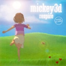
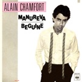

Répertoire 2026-2027
Protest & Hope Songs — chanter pour résister et espérer
Les chansons de la saison
Des hymnes d'engagement et d'espoir, de 1965 à aujourd'hui — toujours arrangés à plusieurs voix

Respire
Mickey 3D
2003

Noir et Blanc
Bernard Lavilliers
1986

Beds Are Burning
Midnight Oil
1987

Hasta Siempre
Nathalie Cardone
1997

Girls Just Want to Have Fun
Cyndi Lauper
1983

Talkin' bout a Revolution
Tracy Chapman
1988

I Saved the World Today
Eurythmics
1999

Mon fils, ma bataille
Daniel Balavoine
1980

Petit Bonhomme
Anne Sylvestre
1977

Sunday Bloody Sunday
U2
1983

California Dreamin'
The Mamas & the Papas
1965
Reprises du répertoire 2025-2026
Des chansons de la saison précédente, toujours au programme

The Sun Always Shines on TV
A-Ha
1985

Manuréva
Alain Chamfort
1979

Puisque tu pars
Jean-Jacques Goldman
1988

Goodbye Yellow Brick Road
Elton John
1973

J'ai demandé à la lune
Indochine
2002
Toxic
Britney Spears
2003

Marcia Baïla
Les Rita Mitsouko
1986
California Dreamin'
The Mamas & the Papas
1965
Curieux de notre répertoire complet ?
Plus de 100 chansons interprétées depuis 2005 sur la page Présentation.
Voir l'historique complet